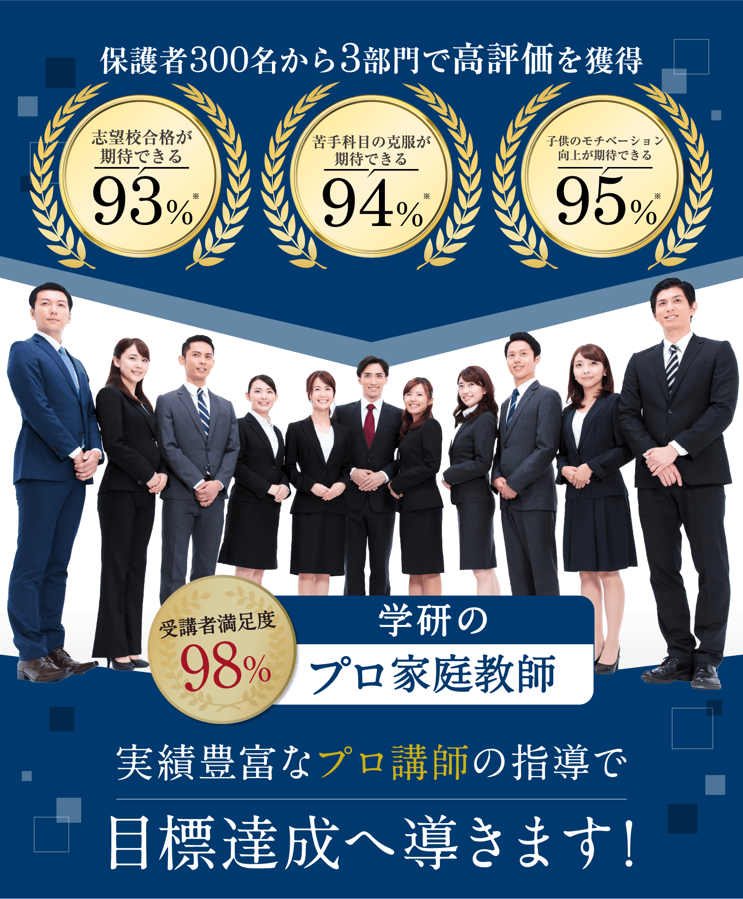
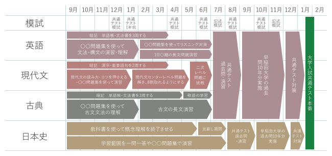
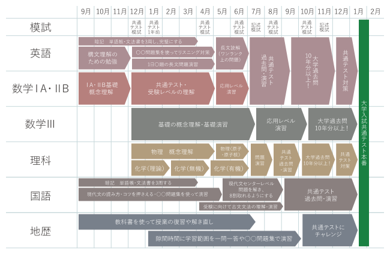
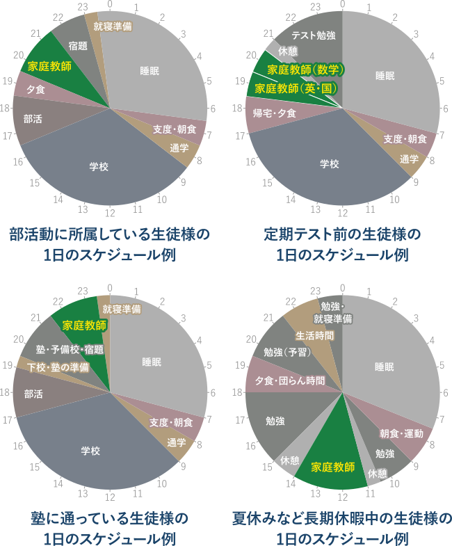

※実施委託先：日本ビジネスリサーチ/調査期間：2023年2月22日～2月23日/調査方法：サービス情報を閲覧した上でのWEB上イメージ調査
調査対象：家庭教師サービスに興味があり塾または家庭教師サービスを利用したことがあるお子様をお持ちの保護者の方 331名


オンラインでの指導も行っているため
いつでもどこでも指導を受けることができます。
合格実績
学研のプロ家庭教師だからこの実績!
有名学校・難関学校への合格者続出!
-
中学受験の
合格実績を見る -
高校受験の
合格実績を見る -
大学受験の
合格実績を見る
※学研の家庭教師は、難関校への合格実績だけを追うのではなく、
生徒一人ひとりの小さな変化・日々の成長・前向きな努力も、
実績として大切にしています。
他と比べてみてください。
学研のプロ家庭教師ならこんなに違う!
-
他社との比較表
-
講師の登録数
-
講師の採用率
-
合格実績
-
指導料
-
学研の家庭教師
-
12万人
-
8%
-
6,710円～/時
-
A社
-
22万人
-
40%
-

-
7,260円～/時
-
B社
-
全国
-
20%
-
8,640円～/時
※当社調べ
-
学研のココが凄い!
管轄の教務センターの担当者が会員様の担当を少人数にすることで、迅速かつ、細部まで行き届いたきめ細かいフォローを行い、お子様の目標達成をサポートいたします。
-

学研のココが凄い!
約40年の長きに渡り、お子様やご家庭を強力にバックアップして参りました。その豊富な合格実績・指導実績をもとに蓄積されたノウハウは、今を活躍するプロ講師に脈々と受け継がれ、多くのご家庭にご好評を得ております。
-

学研のココが凄い!
プロ家庭教師とはいえど、講師との相性面は不安に思われることもあるかと存じます。
指導法や雰囲気をしっかり見定めて、「この講師で大丈夫」とご納得いただいてから授業が開始される安心のシステムを採用しています。
学生のみなさん、
こんなことで悩んでいませんか？
塾に通ってるけど
結果が出ない
授業の内容に
ついていけない
第一志望の
合格圏に届かない
学研のプロ家庭教師に
すべておまかせください!
家庭教師で選ぶなら、学研!
「学研にしてよかった!」という声、
おかげさまで、いま、増えています。
悩みを解決する
プロ家庭教師
家庭教師なんてどこも同じなんて思っていませんか?
いえいえ、学研だからこそできる強みがあります。
強み01
指導実績と合格実績がある
プロ家庭教師
適性検査や面接などで「指導力・人物ともに合格」と判断された8％の人材のみを採用しています。さらにプロ家庭教師には豊富な指導実績と合格実績があります。
強み02
どこよりも満足度が高い
満足度98%のマッチング
学研の家庭教師は、全国規模ならではの安心感とスケールメリットが強み。「ただ家庭教師を紹介する」ではなく、一緒に目標に向かって頑張っていける先生、尊敬しながらも安心できる先生をマッチング。
その結果、「家庭」「講師」の双方から好評を得ており、
98%の会員様に満足していただけています。
強み03
どこよりも合格に直結した
オーダーメイドカリキュラム
受験校合格や成績向上を目標にした、一人ひとりに合った効率的な学習カリキュラムを作成。
「学研の家庭教師」は70年を超える歴史の学研グループの中で1983年に創業した業界のパイオニア。これまで10万人を超える指導実績があります。
一人ひとりの学習状況や習熟度に応じて、作成します!
※講師によって作成方法が異なる場合があります。
難関私立大学志望の生徒様の例

国公立大学志望の生徒様の例

柔軟なスケジュールで対応し、部活との両立も可能!

強み04
どこよりも徹底した
進捗管理、成果主義
目標達成までの学習管理を綿密に行うことで、一人ひとりの学力をしっかりと向上!
専任の教務スタッフが、お子様の理解度、テストの結果などを分析し、生徒さんにピッタリ合った学習カリキュラムを随時見直します。
強み05
どこよりも差がつく
学習指導
内的動機づけを促す指導で、「自分でできる」が「自分はできる」に変わっていき、自己肯定感を培っていきます。
その結果、「勉強が楽しい!」「いつの間にか成績が伸びていた」という、学研ならではの体験をしていただいています。
だから、学研のプロ家庭教師は
どこよりも差がつく!
さあ、次はあなたも!
まずは、資料請求からはじめてみませんか？
早く始めれば始めるほど、大きく差は開きます。
オンラインでの指導も行っているため
いつでもどこでも指導を受けることができます。
学研のプロ家庭教師コース
中学受験の合格実績
中学受験合格 Sさん親子
※プライバシーに配慮して、画像はイメージです。
家庭教師を検討することとなったきっかけは、子どもが自宅での勉強で「わからない」と言うことが多くなってきたと感じたためでした。最初は個別塾に通っていたのですが、先生が毎回違うので、解き方が違ってしまい混乱する、時間内にわからない事を全て解消できない、といった事を聞き、最終的には個別塾ではなく家庭教師をお願いしました。
その際、複数の家庭教師会社に問い合わせたのですが、対応してくださったセンターの方が、私達親子の今後の学習方針について親身に考えてくださったこと、そして、「勝負どころは今だ」とプロの家庭教師を勧めていただいたことから、学研さんにお願いすることになりました。
幸いにもご紹介していただいた先生は子どもにも非常に合っており、親から見てもあまり集中力がない我が子でも、120分の授業はあっという間に過ぎるような指導をしてくださいました。
6年生の夏以降は、通っていた集団塾を辞め、家庭教師の先生のみで志望校対策を行っていただき、2月に見事合格。
子どもは合格を知った瞬間、担当の家庭教師の先生に真っ先に連絡し、先生から「おめでとう！」の言葉をもらって喜んでおりました。
息子は中高一貫校に通っており、かなり忙しい部活に所属しています。せっかく中学受験に合格して入学したにも関わらず、勉強の時間があまり取れないためか、成績は下がる一方。部活のため塾にも通えないことから、家庭教師はどうかと思い、思い切って学研さんに問合せをしてみました。進級も危うい成績だったことや、少ない時間で効果的に勉強を見てもらいたいとの気持ちから、プロコースに申し込みました。
来てくれた先生はさすがプロ。ストレスが少なく、少ない時間ながらも弱点や抜けているところを見抜くのがうまく、効果的に勉強を進めていただけたようです。結果的に進級に必要な点数を余裕を持って取ることができました。
その後、勉強にも少し自信が出たのか、部活との両立もできるようになってきました。プロコースに申し込んで本当に良かったと感じております。
夏を過ぎても模試ではD判定以上が出ず、夢だった志望校を諦めかけていました。最後の希望として、親にわがままを言ってプロの家庭教師をお願いすることになったのは10月のことです。見てもらった科目は数学と英語です。
自分で一人では、手が回らなかった苦手分野の分析からその対策まで対応してもらい、一人では決してこなせない量の問題が、先生となら自然とこなせる、不思議な感覚がありました。モチベーションもしっかり管理していただき「君なら大丈夫」といつも声をかけてくれました。自分もいつかこんなプロの先生になりたいと思ったほどです。
わからないところはわかるまで教えてくれるので、受験まで不安がなく勉強することができました。そして夢だった志望校に合格！本当に良かったです。先生、ありがとう！
私は高2の6月から、「学研の家庭教師」にお世話になりました。
「学研の家庭教師」のおかげで、第一志望の一橋大学経済学部に合格できたので、経験談を皆さんにお話しできればと思います。
私は水泳部に所属しており、部長もやっていたので部活が忙しく、また学校から家まで遠いこともあり、部活との両立を考えて塾には行きませんでした。
周りの友人は塾や予備校に行っており、正直、受験情報面で家庭教師は不安がありました。
しかし、センターと先生が受験情報もしっかりとフォローしてくれて、不安なく受験勉強に集中することができました。
第一志望の一橋大学を卒業したプロの先生に来てもらっていましたが、教え方やゴールから逆算した学習スケジュールの立案まで素晴らしく、的確に無駄なく学習ができたと思います。
先生は時に厳しく、時には雑談も踏まえながら指導してくれたおかげでモチベーションを保ったまま受験本番を迎えることができ、それが合格につながったと考えます。
先生や受験サポートをしていただいた「学研の家庭教師」さんには本当に感謝しています。
大学でもしっかりと勉強して、自分の将来やりたいことや知識を身につけていきたいと思います。
僕は、中学3年生の春から「学研の家庭教師」に入会して志望校合格に向けて勉強を本格的に始めました。
某大手集団予備校に家庭教師と並行して一時期通っていました。
しかし、予備校は学習カリキュラムが時期によって決まっており、自分のペースで受験対策をすることができないと考えたため、「学研の家庭教師」1本で受験に挑みました。
部活はしていませんでしたが、学校行事が盛んな高校だったため、忙しい日々を過ごしていましたが、プロ家庭教師の先生にスキマ時間の使い方や1日の勉強計画を立ててくれたおかげで、濃密な勉強時間を確保できました。
受験シーズンには、徹底的に志望校の過去問をプロの先生に分析していただいたおかげで、より効果的な学習をすることができました。それにより、短期間で合格ラインまでもっていくことができました。
合格まで導いていただいた先生、本当にありがとうございました。
この経験を活かし、大学でも勉強を続けていきます。
コース一覧・料金
学研のプロ家庭教師だからこの実績!
有名学校・難関学校への合格者続出!
-
小学校受験コース
1時間あたり 9,900円（税込）～
幼児教育のみは7,700円(税込)
対象年齢 | 3才～6才 -
小学生コース
1時間あたり 6,710円（税込）～
中学受験・内部進学対策におすすめ
対象年齢 | 小学1年生～6年生 -
中学生コース
1時間あたり 6,710円（税込）～
高校受験・内部進学対策におすすめ
対象年齢 | 中学1年生～3年生 -
高校生コース
1時間あたり 8,910円（税込）～
大学受験・内部進学対策におすすめ
対象年齢 | 高校1年生～3年生 -
医学医療系 志望コース
1時間あたり 16,500円（税込）～
対象年齢 | 高校1年生～3年生
オンライン特別11,000円（税込）
※オンライン授業の料金は上記と異なります。詳細はお問合せください。
学研のプロ家庭教師だからこの実績!
有名学校・難関学校への合格者続出!
学校のテストの点数を上げたい方にお勧めです。苦手科目の克服・得意科目の伸長など生徒様の目的・目標に合わせた指導を行います。学校のテストが安定してくれば、大手模試や志望校の対策に方針を変更することも可能です。

マンツーマン指導で一人ひとりの個性や目標に合わせたプランニングを行ったうえで、きめ細かくフォローをしていきます。指導時間の中であれば、科目・単元の決まりはありませんので、定期テスト直前には定期テスト対策に変更することも可能です。
総合型選抜や学校推薦型選抜での受験をお考えの方にお勧めです。受験に必要な科目の基礎力強化、志望校対策、小論文、推薦文の添削や対策を行います。
だから、学研のプロ家庭教師は
どこよりも差がつく!
さあ、次はあなたも!
まずは、資料請求からはじめてみませんか？
早く始めれば始めるほど、大きく差は開きます。
オンラインでの指導も行っているため
いつでもどこでも指導を受けることができます。
体験指導までの流れ

{kind=link}
{kind=link}
{kind=link}
{kind=link}
{kind=link}
{kind=link}
{kind=link}
step02
カウンセリングと
体験指導
（トータル所要時間：約60分）

大切なのは、家庭教師というスタイルがお子様に合っているかをしっかり判断することです。「自分に合った勉強のやり方」をみつけることが成果につながります。まずは家庭教師の雰囲気を味わっていただき、お子様の反応を見てください。
※地域や指導内容により上記と異なる場合がございます。
詳細はお問い合わせください。
学研の家庭教師体験レッスンの
3つのポイント
- ❶お子様の現在の実力がわかります
- ❷お子様にぴったりの勉強方法が見つかります
- ❸今までの家庭教師との違いがわかります
ご入会を強くおすすめすることはありませんので、
ご安心ください。
よくあるご質問
大切なお子様の勉強方法ですから不安なことも多いはずです。
その他、ご不明な点などございましたら、お気軽にお問い合わせください。
成績についてのご質問
ほんとうに成績は上がりますか？
学研の家庭教師は、教務部に対して毎月の報告を義務付けております。「指導報告書」「定期ミーティング」「個別ミーティング」のシステムにより、お子様の指導状況をチェックし、目標達成までの学習管理を教務部のバックアップにより綿密に行いますので自主学習の習慣と共に学力が向上していきます。
受験対策は大丈夫ですか？
1対1だと競争心がなくなったりはしませんか？
弊社は、受験対策として模擬テストをおすすめしており、 夏期講習・冬期講習も一部教務センターにて実施しております。 偏差値や志望校到達率の把握や単元別の習熟度チェックから、テスト慣れ、 会場慣れに至るまで、受験生のサポートはお任せください。
家庭教師についてのご質問
家庭教師は、アルバイト感覚ではありませんか？
弊社では多くの登録希望家庭教師の中から、学力だけでなく指導力や責任感等の家庭教師としての適正検査「YGPI」を実施して合否を決めております。紹介後も日々の指導状況から毎月の指導報告を義務付けるなど、しっかりとした管理をしておりますのでご安心ください。
本人との相性は合うのでしょうか？
要望や条件を詳しくお伺いし、専門のスタッフが選考にあたり、 ミーティングをした上で紹介しておりますので安心です。弊社は30年以上の実績により家庭教師の登録数も豊富なので、お子様にピッタリの家庭教師を紹介できるシステムとなっております。
家庭教師交代、進路相談などはできるのでしょうか？
大丈夫です。何かありましたら、すぐに弊社へご連絡ください。教務部による管理体制を整えておりますので、担当社員・スタッフが迅速に対応いたします。家庭教師個人ではまかなえないことを全て教務部でサポートさせていただきます。
学び方についてのご質問
特別な教材を購入しないといけないのですか？
弊社は、高額教材のローン契約による販売などは一切ありません。 お子様がお持ちの教科書等で指導を行うことができます。
勉強部屋がないのですが？
ご安心ください。リビングなどでも指導は可能です。また、自宅以外の場所で授業を希望される場合には、近隣の公共施設や家庭教師宅指導もございます。まずは一度ご相談ください。
弊社についてのご質問
テスト前の短期間だけでも申し込みできますか？
テスト前や、夏休みだけなどの短期間もお任せください。目的に応じた指導計画を立て、集中特訓を組むことができます。
病気で休んだり、用事で休んだりすると授業料はどうなりますか？
休んでしまった場合はその分の振替授業を行えます。それによって別途料金がかかることもございません。
やめたくても簡単にやめられないのではないですか？
弊社は1ヶ月前までに退会の申し出をいただければ、 いつでも退会することができます。その場合解約料は必要ありません。 また、退会申告できない場合であっても、1ヶ月分の指導料より高いお金はいただきません。 もちろん、保証金等もございません。